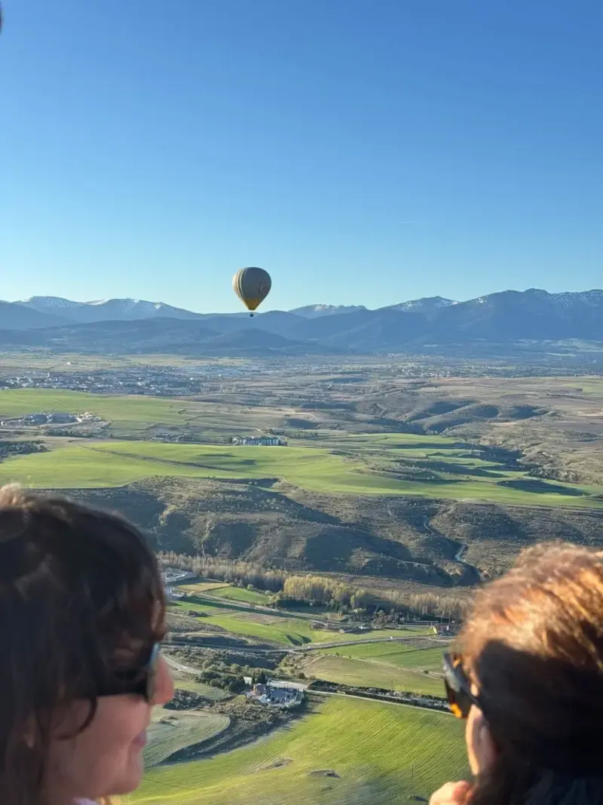

Cuando piensas en ciudades que parecen sacadas de un cuento de hadas, Segovia suele encabezar la lista. Su rica historia, sus monumentos imponentes y su entorno natural la convierten en una joya de la península ibérica. Pero hay una forma de experimentar esta ciudad que eleva la magia literal y figuradamente: desde la barquilla de un globo aerostático.
A nivel mundial, hay ciertos destinos que son mecas para la aerostación (Capadocia en Turquía, Serengueti en Tanzania). En España, ese título lo ostenta indudablemente Segovia. A continuación, te explicamos por qué.
1. Vistas incomparables del Patrimonio de la Humanidad
A diferencia de los vuelos en la naturaleza, el vuelo en Segovia te permite sobrevolar el mismo casco urbano histórico. Imagina estar flotando en completo silencio y ver cómo sale el sol iluminando la piedra del Acueducto Romano. A los pocos minutos, la corriente te arrastra suavemente hacia la Catedral y, como colofón, pasas casi rozando las torres puntiagudas del Alcázar, un castillo que inspiró al mismísimo Walt Disney.

2. Condiciones meteorológicas perfectas
La orografía de Segovia y su ubicación al pie de la Sierra de Guadarrama crean un microclima excepcionalmente estable a primera hora de la mañana. Los vientos suaves y predecibles garantizan no solo que el vuelo sea extremadamente seguro y sin turbulencias, sino también que la ruta del vuelo suela pasar directamente por encima de los principales monumentos.
3. A un paso de Madrid
Otra gran ventaja de Segovia es su accesibilidad. Situada a apenas 30 minutos en tren de alta velocidad (AVE) desde Madrid, o a unos 50 minutos en coche, es la escapada perfecta de un día. Muchos de nuestros pasajeros salen temprano de la capital, viven la aventura del globo, disfrutan de un buen cochinillo asado y están de vuelta en Madrid el mismo día.
Conclusión
Volar en globo es siempre una experiencia inolvidable, pero hacerlo sobre una de las ciudades medievales más bellas de Europa añade una capa de emoción e historia que es difícil de igualar. Si estás buscando el regalo perfecto o simplemente quieres tachar una gran experiencia de tu lista de deseos, el cielo de Segovia te espera.
¿Listo para vivir la magia?
Reserva ahora tu vuelo con Voyager Balloons y disfruta del tradicional brindis con cava al aterrizar.
Ver Fechas y Disponibilidad